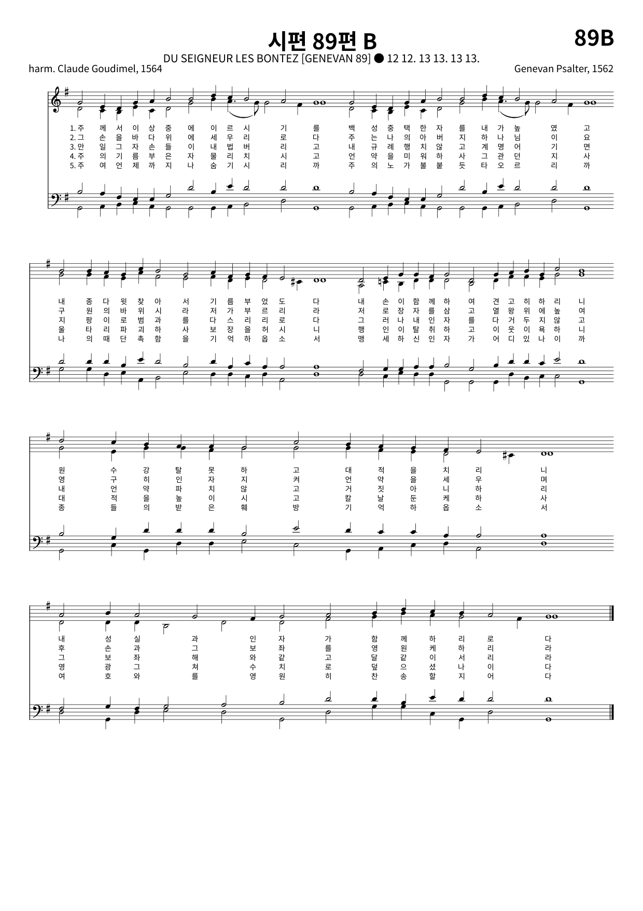

시편 89편 B
DU SEIGNEUR LES BONTEZ [GENEVAN 89] · 12 12. 13 13. 13 13.
곡조: Genevan Psalter, 1562 · 화성: Claude Goudimel, 1564 · 가사: 개역한글판 시편 89편 편역(AI 초벌 편역판 · 신학 감수 전) · 5절
시편 89편은 2곡으로 나누어 실었습니다: A B · 이 곡은 시편 89편 가사의 5~9번째 절입니다.
악보 PDF MusicXML(출력용) MusicXML(반주용, 전주·반복 포함) 개역한글 시편 89편 읽기
악보
← 시편 89편 A 목록반주 재생(준비 중)시편 90편 →
가사
1절 (시편 19-24)
주께서 이상 중에 이르시기를
백성 중 택한 자를 내가 높였고
내 종 다윗 찾아서 기름 부었도다
내 손이 함께 하여 견고히 하리니
원수 강탈 못하고 대적을 치리니
내 성실과 인자가 함께 하리로다
주께서 이상 중에 이르시기를
백성 중 택한 자를 내가 높였고
내 종 다윗 찾아서 기름 부었도다
내 손이 함께 하여 견고히 하리니
원수 강탈 못하고 대적을 치리니
내 성실과 인자가 함께 하리로다
2절 (시편 25-29)
그 손을 바다 위에 세우리로다
주는 나의 아버지 하나님이요
구원의 바위시라 저가 부르리라
저로 장자를 삼고 열왕 위에 높여
영구히 인자 지켜 언약을 세우며
후손과 그 보좌를 영원케 하리라
그 손을 바다 위에 세우리로다
주는 나의 아버지 하나님이요
구원의 바위시라 저가 부르리라
저로 장자를 삼고 열왕 위에 높여
영구히 인자 지켜 언약을 세우며
후손과 그 보좌를 영원케 하리라
3절 (시편 30-37)
만일 그 자손들이 내 법 버리고
내 규례 행치 않고 계명 어기면
지팡이로 범과를 다스리리로다
그러나 내 인자를 다 거두지 않고
내 언약 파치 않고 거짓 아니하리
그 보좌 해와 같고 달 같이 서리라
만일 그 자손들이 내 법 버리고
내 규례 행치 않고 계명 어기면
지팡이로 범과를 다스리리로다
그러나 내 인자를 다 거두지 않고
내 언약 파치 않고 거짓 아니하리
그 보좌 해와 같고 달 같이 서리라
4절 (시편 38-45)
주의 기름 부은 자 물리치시고
언약을 미워하사 그 관 던지사
울타리 파괴하사 보장을 허시니
행인이 탈취하고 이웃이 욕하니
대적을 높이시고 칼날 둔케 하사
영광 그쳐 수치로 덮으셨나이다
주의 기름 부은 자 물리치시고
언약을 미워하사 그 관 던지사
울타리 파괴하사 보장을 허시니
행인이 탈취하고 이웃이 욕하니
대적을 높이시고 칼날 둔케 하사
영광 그쳐 수치로 덮으셨나이다
5절 (시편 46-52. 52절을 9절에 담아 개역 음절의 약 43%로 크게 줄임)
주여 언제까지나 숨기시리까
주의 노가 불붙듯 타오르리까
나의 때 단촉함을 기억하옵소서
맹세하신 인자가 어디 있나이까
종들의 받은 훼방 기억하옵소서
여호와를 영원히 찬송할지어다
주여 언제까지나 숨기시리까
주의 노가 불붙듯 타오르리까
나의 때 단촉함을 기억하옵소서
맹세하신 인자가 어디 있나이까
종들의 받은 훼방 기억하옵소서
여호와를 영원히 찬송할지어다